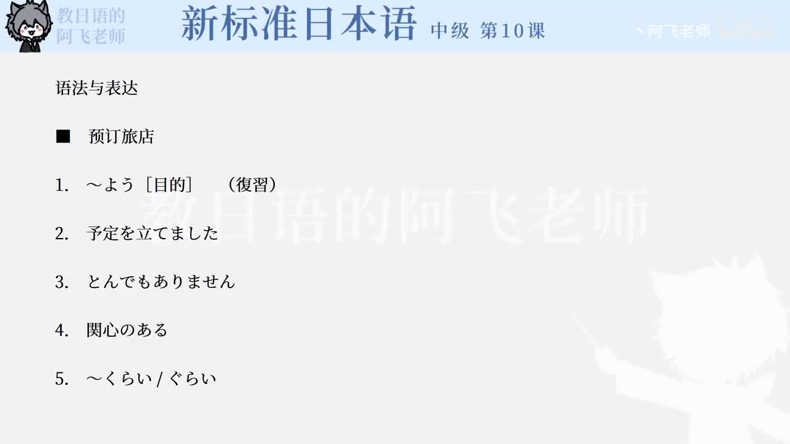

Bilibili P148 · Dialogue Reading
スケジュール
王到大阪取材，山田说明一周日程、邀请去有马温泉，并通过电话预约旅馆。重点练习日程安排、委婉邀请、预约确认和服务敬语。
全篇听力精讲
按 16 句会话轮播。每句依次播放课文原句、中文意思、整句结构、断句、语法和词汇。
这段会话在讲什么
日程说明山田说明王在大阪一周内的取材安排，并确认是否太紧。
温泉邀请水曜日空出来，用「もしよかったら」「寄ってみませんか」柔和提出邀请。
旅馆预约电话里确认日期、人数、住宿晚数、价格和联系方式。
对话推进链
1 · 寒暄よろしくお願いします
2 · 日程予定を立てました
3 · 邀请寄ってみませんか
4 · 预约空いているでしょうか
5 · 确认かしこまりました
逐句精读
重点语法与表达
日程预约核心词汇
练习与复习
来源说明：视频标题、时长、CID 和首帧来自 Bilibili 公开视频接口；课文原文来自本地《新标准日本语》中级第10课教材数据，并修正明显录入误差用于学习，例如「一週間」「ありがとうございます」「寄ってみませんか」。